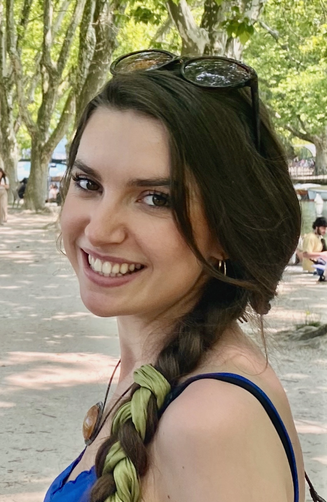

Princeton University
Centennial Fellow
PhD in Astrophysical Sciences (Expected 2030)
Harvard University
B.A. in Physics, High Honors, cum laude (2025), GPA 3.9/4.0
Centennial Fellowship, Princeton University, 2025–2030
Carol Davis Prize, Harvard University, 2025
Herchel Smith Undergraduate Research Fellowship, Harvard University, 2024
Certificate of Distinction in Teaching, Harvard University, 2024
Weissman International Internship Scholar, Harvard University, 2023
Course Assistant, Physics 19: Introduction to Theoretical Physics, Harvard (Fall 2024)
Teaching Assistant, Chem 160: Quantum Chemistry, Harvard (Fall 2023)
Course Assistant, Physics 143A: Quantum Physics, Harvard (Spring 2024)
Course Assistant, Physics 137: Conceptual Foundations of Quantum Mechanics, Harvard (Spring 2023)
Python, Mathematica, MATLAB, scientific computing, numerical simulations, machine learning, technical writing
Languages: English (fluent), Russian (fluent), Ukrainian (intermediate)
Elizabeth Kozlov studies the geometry of spacetime at its most extreme limits. Her research centers on black hole physics, with particular emphasis on the mathematical structure of photon ring observables and the development of semi-analytic models for magnetized accretion in Kerr spacetimes.
Elizabeth is pursuing her doctorate in astrophysics at Princeton University, where she was awarded the Centennial Fellowship in the Natural Sciences and Engineering. Her current work analyzes the differential geometry of null geodesics in the Kerr metric to characterize the structure of spin–inclination degeneracies in black hole photon rings, with the goal of identifying geometrically invariant observables that admit the determination of black hole spin. In parallel, she is working on developing semi-analytic magnetohydrodynamic models of horizon-scale accretion that extend to retrograde configurations.
As an undergraduate at Harvard University, Elizabeth developed a geometric framework for black hole spin inference through photon ring characterization and Fourier-based scattering diagnostics. Her earlier research includes precision calibration of superconducting magnets for the Large Hadron Collider at the European Organization for Nuclear Research. In condensed matter theory, she studied chaotic branched flow and the emergence of stable wave-guiding structures in periodic potentials, investigating how classical ray chaos gives rise to long-lived quantum channels in high Brillouin-zone superlattice systems. She also did work in organic chemistry and designed and synthesized metal-organic frameworks optimized for radionuclide capture, engineering pore geometry and chemical stability for selective adsorption of nuclear waste. She graduated cum laude with high honors in physics and received the Carol Davis Prize, the Herchel Smith Fellowship, and the Certificate of Distinction in Teaching for her work in quantum mechanics. She also taught courses in physics, philosophy, and chemistry, wrote for the arts board of The Harvard Crimson, and served as president of the Harvard Society of Physics Students.
At Princeton, Elizabeth serves on the graduate leadership committee for her department. Her training includes graduate coursework in general relativity, quantum field theory, machine learning, and particle physics.
Originally from the state of Maine, Elizabeth loves hiking and skiing. If not doing research, she can be found reading, traveling, knitting, and exploring new restaurants with friends.
Her main project studies photon ring observables in Kerr spacetimes: the bright, lensed features formed by light that completes near-polar orbits before escaping to a distant observer. The goal is to characterize the degeneracy structure of these observables (ring diameter, centroid displacement, arc width) and identify which combinations of measurements can break the spin–inclination degeneracy and recover black hole spin. The approach uses differential geometry of null geodesics, Fisher information analysis, and Jacobian sensitivity mapping over the Kerr parameter space.
In parallel she is developing semi-analytic magnetohydrodynamic models of horizon-scale accretion, extending existing force-free magnetosphere solutions to retrograde disk configurations.
She is also beginning a new collaboration on primordial black holes, formed in the very early universe before any stars existed. These objects are of significant cosmological interest as dark matter candidates and as probes of the primordial power spectrum.
Previous WorkSpin Measurement of Sagittarius A*, Center for Astrophysics, Harvard & Smithsonian (2024)
Geometric framework for black hole spin inference through photon ring characterization; Fourier-based diagnostics for interstellar scattering mitigation.
Dark Matter Detection, Harvard University (2024)
Hybrid anomaly-detection pipeline combining Isolation Forests and autoencoders applied to CoGeNT nuclear recoil data.
Superconducting Magnet Calibration, CERN (2023)
Calibration and field characterization of 16 T Nb3Sn magnets for future LHC upgrades.
Metal-Organic Framework Design, Whitesides Lab, Harvard (2022)
Synthesis of MOFs optimized for radionuclide adsorption.
Chaotic Branched Flow, Heller Group, Harvard (2022)
Chaotic branched flow and stable wave-guiding structures in high Brillouin-zone superlattice systems.
Correspondence may be directed to the following.